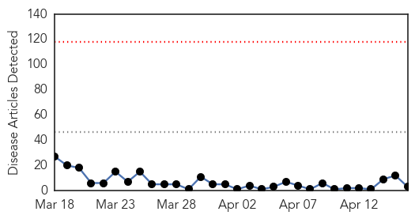
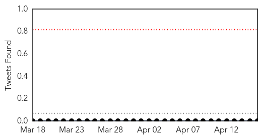
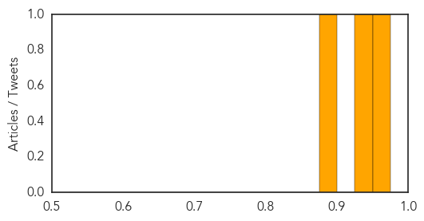

Swine Flu
30-Day Web Trend
0 alerts, 0 warnings

30-Day Twitter Trend
0 alerts, 0 warnings

Article Locations
Article Confidences
Top Articles:
Top Tweets:
-
No tweets found for Apr 16, 2015
Dengue Fever
30-Day Web Trend
1 alerts, 0 warnings

30-Day Twitter Trend
0 alerts, 0 warnings

Article Locations
Article Confidences

Top Articles:
- 0.998
- Maldives hit by dengue fever in global epidemic
- 0.994
- News reader
- 0.994
- Science, Technology and Medicine News Updates From Asia
- 0.973
- Mosquitoes from South-East Asia carrying diseases discovered at Australian airports
- 0.947
- City Health Department encourages public to take precautions against mosquitoes
Top Tweets:
-
No tweets found for Apr 16, 2015